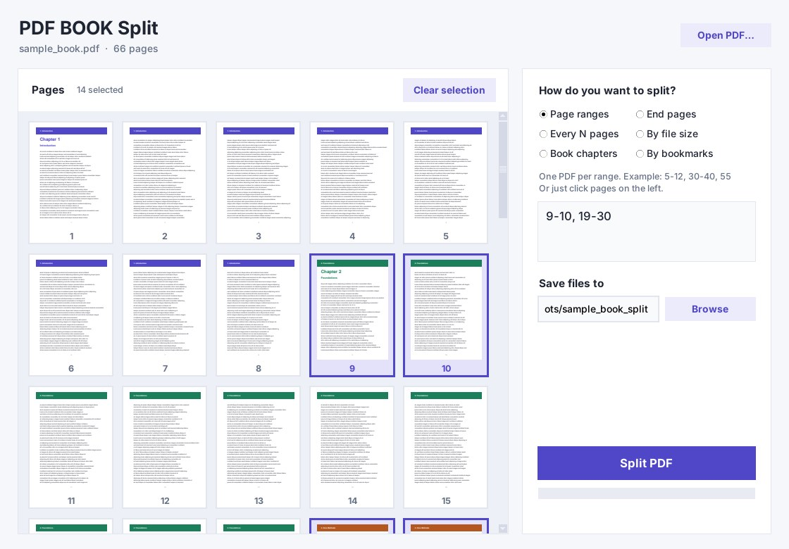
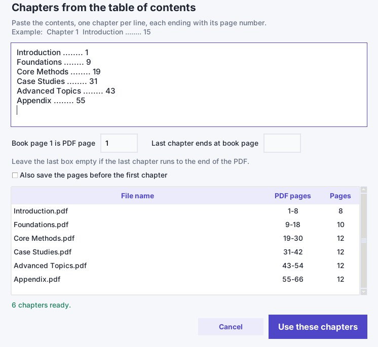
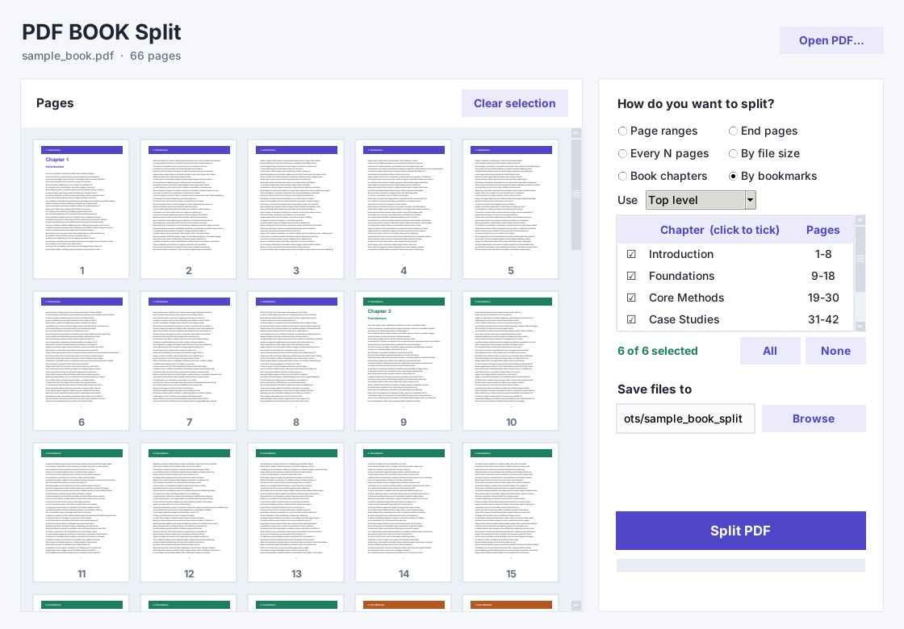
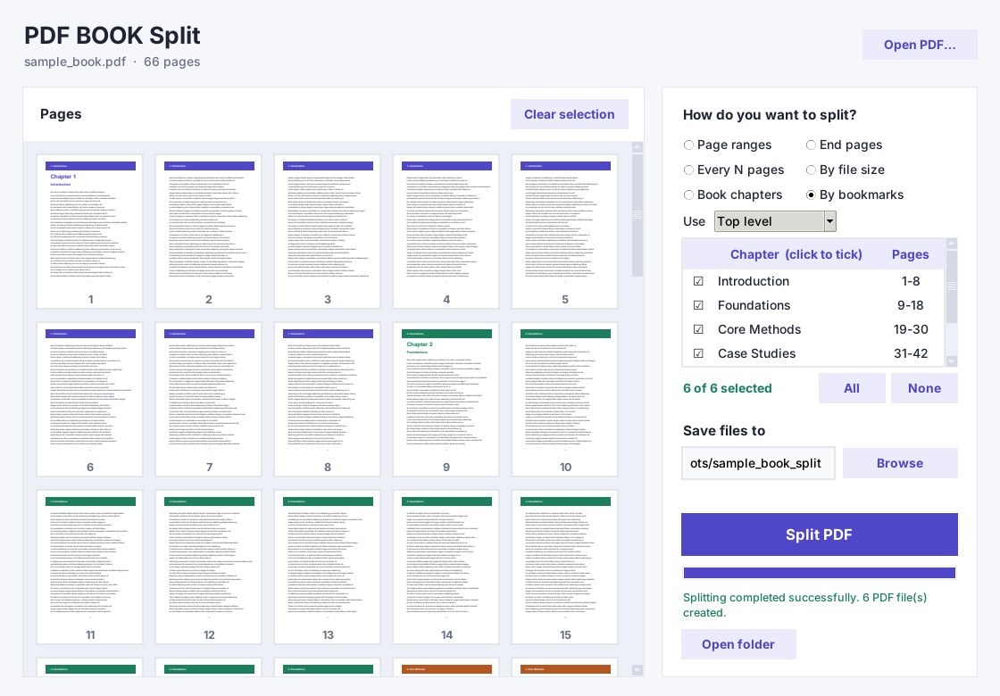

Split PDF books in a second
Split a PDF into small PDFs. Split chapters in seconds, split a big PDF book into parts you can actually use, or cut a huge PDF into email-sized files. Your files never leave your computer, and the program is yours forever.
One-time payment · Windows 10 / 11 computers only · Not for Mac, Linux, phones or tablets

Six ways to split
Book chapters
Paste the printed table of contents and set "book page 1 is PDF page N". The program maps printed page numbers to PDF pages for you.
Guide: split a PDF into chapters without bookmarks →
Free book page to PDF page calculator →
By bookmarks
Read the PDF's own outline, tick the chapters you want, and split only those.
Page ranges
Type ranges like 5-12, 30-40, 55, or click page thumbnails to fill them in.
End pages
Give only the last page of each part, for example 20, 50.
Every N pages
Cut the document into equal parts.
By file size
Set a maximum size in MB per file, for email limits or upload limits.
Built for real books
Fast and light
Opens big books instantly. Tested on a 1000-page, 218 MB book: opened in under a second and split into 5 files in about a second.
Keeps bookmarks
Bookmarks are copied into each output file. Output files are named like "01 Chapter name.pdf".
Arabic friendly
Accepts Arabic-Indic and Persian digits everywhere, so you can paste a contents page from an Arabic book as it is.
Private by design
No upload, no account, no cloud. Your books stay on your computer.
Drag and drop
Drop a PDF on the window, preview pages, and press Ctrl+Enter to split.
See it at work



One price. Yours to keep.
Launch price for a limited time. One-time license for Windows. No subscription.
Buy now Try 3 splits freeQuestions
Does it need bookmarks in the PDF?
No. Bookmarks mode uses them, but Book chapters mode works from a pasted table of contents, so scanned or downloaded books without bookmarks work too.
Do my files get uploaded anywhere?
No. Splitting happens entirely on your computer.
Can it read the contents page automatically?
Not at the moment. You paste the contents text yourself. This is the reliable method for books whose text cannot be extracted, which is common with Arabic PDFs.
Will Windows show a warning when I run it?
The program is not code-signed yet, so Windows SmartScreen may show "Windows protected your PC". Choose "More info", then "Run anyway".
Which Windows versions are supported?
Windows 10 and Windows 11, 64-bit.
Is there a free trial?
Yes. You can split three times for free, with no account. After that the program asks for a license key.
Does it work on Mac, Linux, a phone or a tablet?
No. PDF BOOK SPLIT runs only on Windows 10 or 11 computers (64-bit), desktop or laptop. It does not run on Mac, Linux, Chromebook, iPhone, iPad or Android. Please try the free version on your Windows computer before you buy.
How do I get the free trial?
Click Download free trial, confirm that you have a Windows computer, and enter your email on the download page. You get the full program; your first 3 splits are free. If you buy later, paste the license key into the same program, with nothing new to install.
What if the program does not work on my computer?
Email support@pdfbooksplit.com with your Windows version and a screenshot of the error (required). We will try to fix it first. If we cannot, you get a full refund within 7 days of purchase. See the refund policy.
How does the license key work?
After you buy, Payhip emails you a license key. Paste it once into the activation window while you are online. After that the program works offline. One key works on 2 of your Windows computers.
Guides
Split a PDF into chapters without bookmarks
The page-offset problem explained, with a worked example.
How to split a PDF by chapters
Three ways: bookmarks, printed contents, or page ranges.
Split a PDF by file size
Keep every part under a limit such as 10 MB.
Book page to PDF page calculator
Free tool: convert printed page numbers to PDF pages.
تقسيم كتاب PDF إلى فصول
الدليل بالعربية.